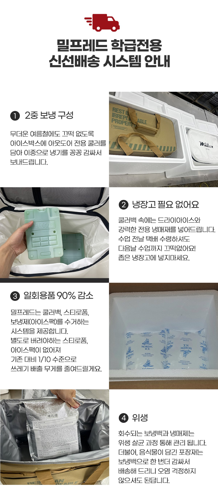

선생님은
수업에만 집중하세요
재료·도구·커리큘럼·초신선배송까지
전부 포함된 교육용 요리키트
매달 한정 수량 · 비용 0원 · 의무 없음


선생님, 요리수업
이렇게 힘드셨죠?
설문조사 결과, 동료 선생님들이 밀프레드를 모르는 이유 1위는 "아직 몰라서"(64%)였습니다
재료 준비가 막막
장보기, 소분, 위생 관리까지 혼자 감당
안전 사고 걱정
불·칼 사용 시 아이들 다칠까 불안
식재료 신선도
냉장고 없는 교실, 전날 배송 시 상할까 걱정
복잡한 결제·행정
학교 예산 결제, 서류 발행, 정산까지
뒷정리 부담
음식물 쓰레기, 일회용품, 설거지
밀프레드가
전부 해결합니다
교육과정 연계 커리큘럼부터 초신선 안심배송까지
초신선 안심배송
5중 보냉 시스템으로 48시간 냉기 유지.
드라이아이스 + SPA 냉매재 + 은박 보냉백으로
냉장고 보관이 필요 없습니다.
교육과정 연계 커리큘럼
2022 개정 교육과정 대응
실과 PPT · 영상 · 레시피 제공
올인원 수업 구성
개봉 즉시 수업 시작
1인분 개별포장 · 조리도구 · 포장용기
불·칼 없는 안전 메뉴
20가지+ 세계 요리
10만명 사고 0건 · 시즌 특별 메뉴
환경까지 생각한 수거 시스템
쿨러백·스티로폼·아이스팩 회수 → 위생 살균 재사용. 일회용품 90% 감소.
냉장고가 없어도
걱정 마세요
5중 보냉으로 48시간 냉기 유지, 교실까지 초신선 안심배송


2중 보냉 구성
아이스박스 + 아웃도어 전용 쿨러로 이중 냉기
냉장고 필요 없음
드라이아이스 + 전용 냉매재, 전날 수령해도 다음날 OK
일회용품 90% 감소
쿨러백 · 스티로폼 · 아이스팩 수거, 쓰레기 1/10 수준
위생 살균 관리
회수 보냉백 · 냉매재 위생 살균, 식재료 보냉백 이중 포장
3단계로 끝나는
요리수업

메뉴 선택
카카오톡 상담 or
플랫폼(지마켓·11번가·네이버) 주문

키트 수령
수업 전날 초신선 배송
냉장고 보관 불필요

수업 시작!
개봉 → 배분 → 만들기 → 먹기 → 정리
30~40분이면 끝
매달 한정 수량 지원 · 배송비 무료
불·칼 없이 만드는
20가지+ 세계 요리
한식, 양식, 디저트, 시즌 한정 메뉴까지
숫자가 증명합니다
전국에서 밀프레드와
함께하고 있습니다
280명의 선생님이 직접 들려주신 이야기입니다


2022 개정 교육과정과
함께합니다


| 교육과정 코드 | 교육 내용 | 밀프레드 연계 |
|---|---|---|
| [6실04-04] | 건강한 식생활을 위한 식품의 선택과 보관 | 식재료 원산지 학습, 보관 방법 교육 |
| [6실04-05] | 간단한 음식 만들기를 통해 식생활 실천 | 핵심 — 불·칼 없이 안전 요리 실습 |
| [6실04-06] | 음식 만들기의 안전과 위생 실천 | 개인별 위생 포장, 안전 조리도구 |
| 교육과정 코드 | 교육 내용 | 밀프레드 연계 |
|---|---|---|
| [9기가04-04] | 균형 잡힌 식사 계획, 건강한 식생활 | 영양 정보, 세계 요리 식문화 경험 |
| [9기가04-05] | 식품의 안전한 선택과 조리 | 안전 조리법, 식품 안전 교육 연계 |
| 누리과정 영역 | 교육 내용 | 밀프레드 연계 |
|---|---|---|
| 신체운동·건강 | 건강하게 생활하기 | 요리활동 통한 식재료 탐색 |
| 자연탐구 | 탐구과정 즐기기 | 요리 과정 변화 관찰 |
| 사회관계 | 더불어 생활하기 | 협력 요리 통한 사회성 발달 |
학교 행정,
저희가 맞춰드립니다
선생님이 편한 방식으로 주문하고, 필요한 서류를 바로 받으세요
결제 방식
행정 서류 체크리스트
함께할수록
더 저렴해져요
동료 선생님과 함께 주문하면 최대 10% 할인

다른 메뉴와 합산 가능 — 예: 샌드위치 10세트 + 카나페 9세트 = 19세트 → 1세트 무료
무료 증정 세트는 다른 4인분 메뉴로 변경 가능
동학년 선생님, 같은 학교 선생님과 함께 주문하면 더 큰 혜택!
카카오톡 "밀프레드"로 문의해 주세요.
무료 샘플,
이런 구성이 도착합니다
매달 한정된 수량만 지원합니다

자주 묻는 질문
다음 수업,
밀프레드와 시작하세요
무료 샘플을 신청하고 직접 경험해 보세요
30초면 완료 · 비용 0원 · 의무 없음